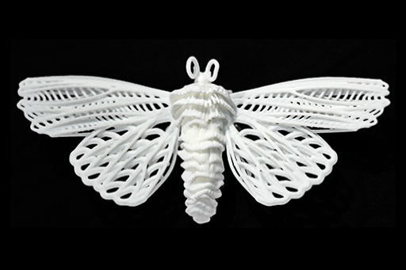
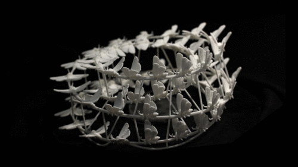
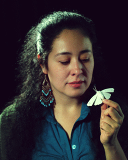
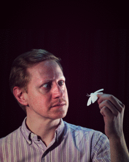
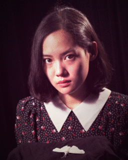
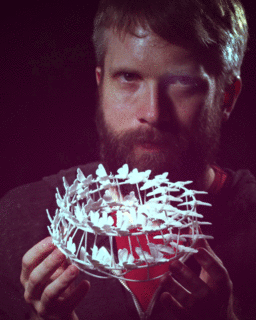
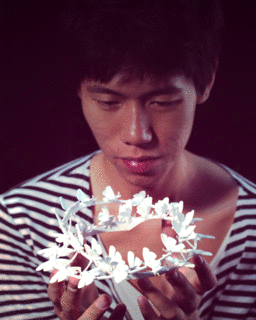

told in a variety of media with tools built in
select these links to display real time 3D pages
(may not be compatible with your browser)
This is a story about a migration of miller moths

In 1991 the largest miller moth migration in memory was occurring and the night time sky was filled with the dusty travelers. They would crowd around streetlamps and die in muddy piles. Some people believe that moths are attracted to light because it interrupts their ability to navigate. I would propose that the network of telephone poles has become sentient and evolved the ability to implant their spores into the obsessive moths. This is more or less how cordyceps reproduce, driving their host insects to suicide.
We Go Together tells the story of the miller moth migration and their encounter with our technology through a series of interactive webgl animations, 3D prints, virtual reality experiences, musical performance, robot drawings, etc. You can read more about the process here.
Complexity can arise out of a multiplicity of relatively simple interactions, the shape that emerges and then loops in this video is the result of recursive matrix multiplication, where the latter parts of the line are affected by the previous parts and the sine wave that drives the shape of the line is modified over its length.
This idea is the basis for the techniques I used to build TREE.js. You can read more about hierarchical sine waves here.
The Miller Moth is the adult form of the Army Cutworm, their eggs are laid in the soil. They feed on wheat and barley and they pupate in the soil.
Miller Moths are so named because of their dusty scales they emerge in early summer, sometimes in huge numbers. They travel to the mountains where they feed at night on the nectar of wildflowers
Panpsychism is the idea that consciousness is a fundamental feature of the universe and would naturally arise within any sufficiently complex, information-processing system. All living things are conscious, this would include all vertebrates, worms, jellyfish, insects and plants; it’s also possible that this is true of complex systems that we wouldn’t normally think of as being alive, such as the internet.
Cordyceps are a family of fungus which take over the minds of insects. Once infected, the insects are driven to suicide in order to facilitate the spread of the spores. Perhaps our network of telephone poles has learned some techniques from this species and are using it to reproduce and evolve.

When we meet we dissolve a little
and we can become something new, together.





Thank you:
Scott Garner - for showing me the way
Dan Shiffman - for the Nature of Code
Marina Zurkow - for The Fungus Among us
Danny Rozin - for setting an example
Katherine Dillon and my thesis group
Ryan Bartley, Norah Solorzano, Leslie Lin, and Shawn Chua for being my models
Ken Perlin, Wyna Liu, Pamela Liou, Gal Sasson, Omer Shapira
and all others for the support